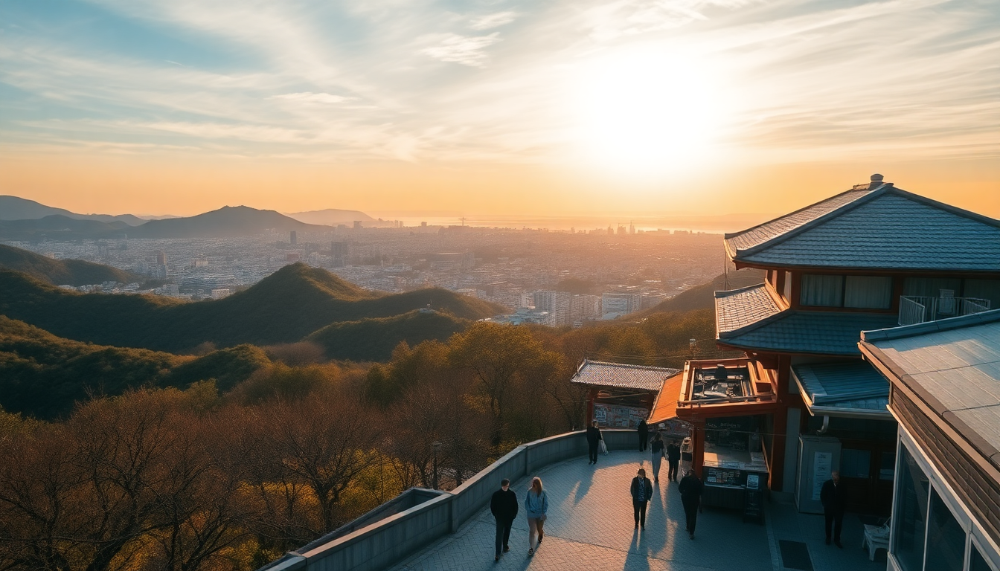

Best Time to Visit Japan: A Month-by-Month Guide for 2025

I’ve been to Japan in every season except deep winter (I hate the cold), and I’ve made plenty of mistakes—like visiting Kyoto during Golden Week and spending an hour shuffling through Fushimi Inari behind a wall of selfie sticks. This guide is the cheat sheet I wish I’d had: what each month actually feels like, where you should go, and when to skip the obvious spots.
What’s the weather like month by month in Japan?
Japan’s seasons hit hard and fast. Spring (March–May) is the superstar, but it comes with crowds and sky-high prices. Summer (June–August) is humid and typhoon-prone, though Hokkaido stays cool. Autumn (September–November) is my personal pick—crisp air, fewer tourists, and stunning foliage. Winter (December–February) is cold and dry, great for skiing in Hokkaido or seeing snow monkeys near Nagano.
- January — Freezing in Hokkaido (expect -10°C in Sapporo), but Tokyo and Osaka hover around 5–10°C. Clear skies, low crowds.
- April — Cherry blossoms peak in Tokyo and Kyoto. Expect 15–20°C and packed parks. Book hotels six months ahead.
- July — Humid and rainy in most of Japan. Head to Hokkaido for 20°C comfort and lavender fields in Furano.
- October — Perfect weather in Kyoto (18–22°C) and the start of autumn colors in Nikko and Hakone.
When is the best time for cherry blossoms in Tokyo and Kyoto?
Late March to early April is the window, but it shifts year to year. In 2024, Tokyo’s peak hit March 29. Kyoto blooms a few days later. If you want to see them without the mobs, go to Ueno Park in Tokyo at 6 AM—I did this and had the whole path to myself. In Kyoto, skip the Philosopher’s Path (it’s a conga line) and try Maruyama Park or the quieter Heian Shrine garden.
- Tokyo: Shinjuku Gyoen is worth the ¥500 entry fee—fewer crowds than Ueno.
- Kyoto: The Nakamura-cho area near Kiyomizu-dera has hidden blossom spots.
- Osaka: Osaka Castle Park is fine, but I prefer Kema Sakuranomiya Park along the river—free, long, and locals-only.
- Hokkaido: Sakura bloom in early May here. Matsumae Park has 10,000 trees and almost no tourists.
Is summer worth visiting in Japan?
Honestly, only if you’re heading to Hokkaido. July and August in Tokyo and Kyoto are brutal—35°C with 80% humidity. I nearly passed out walking from Kinkaku-ji to Ryoan-ji in Kyoto one August afternoon. The air feels thick, and every train station is a sweatbox. That said, summer has fireworks (hanabi) festivals—the Sumida River Fireworks in Tokyo are spectacular, but you’ll be standing shoulder-to-shoulder with 700,000 people.
- Osaka in summer: Dotonbori is unbearable during the day. Go at night for grilled octopus balls (takoyaki) at Kushikatsu Daruma.
- Hokkaido in July: The Furano Lavender Festival is legit. Stay at Hotel Naturwald Furano for easy access.
- Typhoon risk: August and September bring storms. I once got stuck in Osaka Station for three hours because trains stopped. Always buy travel insurance.
What’s autumn like in Kyoto and Osaka?
Autumn is my absolute favorite. October and November bring mild temperatures (15–22°C) and the most beautiful red and orange foliage I’ve ever seen. Kyoto’s Tofuku-ji Temple is the king of autumn colors—go on a weekday morning to avoid the crush. In Osaka, Minoo Park is a 30-minute train ride from Umeda Station and has a waterfall plus maple leaves that look photoshopped.
- Kyoto: Kiyomizu-dera at sunset during mid-November is iconic, but arrive by 3 PM to beat the tour buses.
- Osaka: Katsuo-ji Temple is a hidden gem—it’s famous for daruma dolls, and the foliage is stunning.
- Tokyo: Rikugien Garden does a nighttime illumination in November. Book a slot online—they sell out.
- Hokkaido: Daisetsuzan National Park has early colors in September. Hike the Kurodake Ropeway for panoramic views.
Should I visit Hokkaido in winter?
If you ski or snowboard, absolutely. Niseko gets legendary powder—dry, light, and deep. I don’t ski, so I spent my winter trip in Sapporo during the Snow Festival (early February). The ice sculptures at Odori Park are impressive, but the cold is punishing—I wore three layers and still felt it. The upside: Hokkaido’s winter is dry, so it feels less harsh than Tokyo’s damp chill.
- Sapporo: Stay at JR Tower Hotel Nikko Sapporo—connected to the station, so you avoid the cold.
- Onsen tip: Noboribetsu is a 90-minute bus ride from Sapporo. The hellish volcanic valley (Jigokudani) is worth the sulfur smell.
- Food: Soup curry at GARAKU in Sapporo is the perfect winter meal. Get the chicken and vegetable bowl.
When are the worst crowds in Japan?
Golden Week (April 29–May 5) is a nightmare. Trains are packed, hotels triple in price, and every temple has a queue. I made the mistake of visiting Fushimi Inari during Golden Week—it took 45 minutes just to get through the first gate. Also avoid Obon (mid-August) and New Year’s (Dec 29–Jan 3). If you’re stuck traveling during these periods, stay in Hokkaido—it’s less affected.
- Tokyo: Skip Shibuya Crossing during Golden Week. Try Yanaka Ginza instead—it’s old-school Tokyo with no crowds.
- Kyoto: Avoid Arashiyama Bamboo Grove entirely during peak times. Go at 7 AM or don’t go.
- Osaka: Universal Studios Japan is a zoo year-round. Buy Express Passes if you must go.
FAQ
What is the cheapest month to visit Japan? January and February are the cheapest for flights and hotels, except in Hokkaido (ski season spikes prices). I found a round-trip from Los Angeles to Narita for $480 in mid-January. Kyoto’s hotels drop to ¥8,000 per night versus ¥20,000 in April. Just pack warm clothes.
Is September a good month to visit Japan? It’s a mixed bag. Early September is still hot and humid, and typhoons are common. But late September brings cooler air and fewer tourists. I went to Kamakura in late September—the Great Buddha was nearly alone, and the beach cafes were closing up, which felt peaceful.
Should I buy a JR Pass for a 2025 trip? Probably yes, if you’re doing Tokyo–Kyoto–Osaka. The pass price increased in 2024 (now ¥50,000 for 7 days), but a round-trip Shinkansen from Tokyo to Kyoto costs about ¥28,000. Add a day trip to Nara or Himeji, and it pays for itself. Buy it online before you arrive—it’s cheaper than in Japan.
Conclusion
- Spring (late March–early April) is beautiful but crowded and expensive—book everything six months out.
- Summer (July–August) is hot and humid; skip Honshu and head to Hokkaido for lavender and cool air.
- Autumn (October–November) is the sweet spot—mild weather, fewer tourists, and stunning foliage in Kyoto and Nikko.
- Winter (January–February) is great for budget travelers and skiers, but avoid Sapporo during the Snow Festival if you hate crowds.
- Golden Week and Obon are travel traps—stay put in one city or go rural.